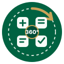

Validando…
Carga Motores compatibles. La sesión queda protegida en este equipo.
Se borrarán los Motores procesados, conteos, pedidos en tránsito, fechas y filtros guardados por Control Ops en este dispositivo.
Tus archivos Excel y PDF originales no se eliminan.